一、主模块
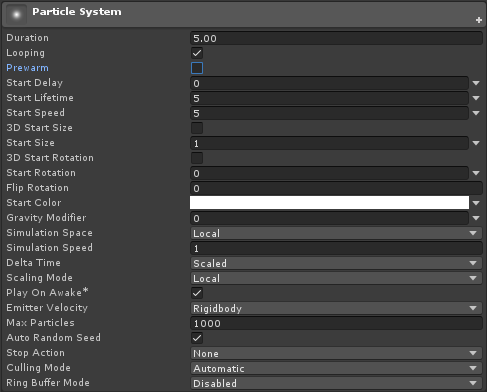
- Duration：不勾循环的情况下，粒子发射器的发射持续时间，单位秒
- Looping：是否循环发射粒子
- Prewarm：开启该选项的粒子系统在场景中实例化或者由Deactive转为active时，会立即执行一次完整的模拟。以“火焰”为例，Prewarm开启时，加载后第一帧即能看到“大火”，而不是从“火苗”开始逐渐变大
- Start Delay：粒子发射器初始化发射的延迟时间，单位秒，如果勾选了Prewarm，则该选项失效
- Start Lifetime：粒子本身的生命周期，单位秒，指一个粒子被发射后，经过多少时间消失
- Start Speed：粒子开始时的初始速度
- 3D Start Size：勾选的话，则可以在xyz三个轴上调整粒子的尺寸，当然在布告板模式下，z轴的调节没有意义
- Start Size：同步设置xyz轴的尺寸
- 3D Start Rotation：粒子可以绕着xyz三个设定不同的角度
- Start Rotation：只设置ｚ轴方向旋转角度
- Flip Rotation：反跳旋转，设置一个[0, 1]闭区间的值，假设Start Rotation值为10，0代表旋转值不变即10，1代表方向完全取反即-10。01中间的值代表权重，将以该权重从1010之间随机
- Start Color：粒子初始颜色
- Gravity Modifier：粒子施加一个向下的力，负值是向上的
- Simulation Space：粒子的运动所使用的空间坐标
- Local：使用自身粒子系统的游戏物体的坐标
- World：使用世界坐标，就是场景坐标
- Custom：使用另一个物体的坐标。当这个物体坐标变化时，粒子也会跟着变化的，比如物体的位移会带动粒子位移
- Simulation Speed：整体改变粒子的运动快慢，注意不只是粒子的速度。而是粒子总体属性，在空间位置中的变化，整体放慢或加快
- Delta Time：粒子系统推进的方式
- Scaled：该粒子系统按照时间推进（不同刷新率的的设备有相同表现）
- Unscaled：完全按照帧来推进
- Scaling Mode：缩放模式
- Hierarchy：根据其Transform及其所有父级进行缩放
- Local：仅粒子系统自身节点应用缩放，忽略任何父级
- Shape：将缩放应用于粒子起始位置，但不影响粒子大小
- Play on Awake：如果启用此属性，则粒子系统会在创建对象时自动启动
- Emitter Velocity：选择粒子系统如何计算继承速度和发射模块使用的速度。系统可以使用 Rigidbody 组件（如果存在）或通过跟踪 Transform 组件的运动来计算速度。如果不存在 Rigidbody 组件，系统默认使用其 Transform 组件
- Max Particles：系统中同时允许的最多粒子数。如果达到限制，则移除一些粒子
- Auto Random Seed：如果启用此属性，则每次播放时粒子系统看起来都会不同。设置为 false 时，每次播放时系统都完全相同
- Random Seed：禁用自动随机种子时，此值用于创建唯一的可重复效果
- Stop
Action：当属于系统的所有粒子都已完成时，可使系统执行某种操作。当一个系统的所有粒子都已死亡，并且系统存活时间已超过
Duration
设定的值时，判定该系统已停止。对于循环系统，只有在通过脚本停止系统时才会发生这种情况
- None：什么都不做
- Disable：禁用游戏对象
- Destroy：销毁游戏对象。
- Callback：将 OnParticleSystemStopped 回调发送给附加到游戏对象的任何脚本
- Culling Mode：粒子在屏幕外时如何处理模拟
- Automatic：自动，Looping使用Pause，而所有其他使用Always Simulate
- Pause And Catch-up：系统在屏幕外时停止模拟。当重新进入视图时，模拟会执行一大步以到达在不暂停的情况下可实现的程度。在复杂系统中，此选项可能会导致性能尖峰
- Pause：系统在屏幕外时停止模拟
- Always Simulate：无论是否在屏幕上，系统始终处理每个帧的模拟
- Ring Buffer Mode：保持粒子存活直到它们达到 Max Particles
计数，此时新粒子会取代最早的粒子，而不是在它们的寿命终结时才删除粒子
- Disabled：禁用 Ring Buffer Mode，以便系统在粒子生命周期终结时删除粒子
- Pause Until Replaced：在粒子生命周期结束时暂停旧粒子，直至达到 Max Particle 限制，此时系统会进行粒子再循环，因此旧粒子会重新显示为新粒子
- Loop Until Replaced：在粒子生命周期结束时，粒子将倒回到其生命周期的指定比例，直至达到 Max Particle 限制，此时系统会进行粒子再循环，因此旧粒子会重新显示为新粒子
二、Emission（发射器）
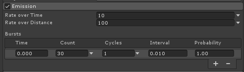
- Rate over Time（按时间频率发射）：每经过1秒发射的数量
- Rate over Distance（按距离频率发射）：每移动1个单位距离发射的数量
- Bursts（迸发）：从第几（Time）秒开始，发射多少个（Count），这次发射循环几次（Cycles），每次循环间隔多久（Interval）
三、Shape（发射器形状）

- Shape：发射器的基本形状，默认是Cone（锥体）
- Sphere：球体
- Hemisphere：半球体
- Cone：锥体
- Donut：甜甜圈
- Box：正方体
- Mesh：网格
- Mesh Renderer：网格渲染
- Skinned Mesh Renderer：骨骼网格渲染（特效随骨骼运动发射时用这个）
- Sprite：精灵
- Sprite Renderer：精灵渲染
- Circle：圆形
- Edge：一条线
- Rectangle：矩形
这里以默认的Cone为例：
- Angle：锥体角度
- Radius：锥体半径
- Radius Thickness：锥体体积，0~1的值
- Arc：锥体发射的弧度范围
- Mode：锥体发射模式
- Random：整个锥体区域随机发射
- Loop：正俯视视角下，调整锥体体积变成一个圆环，这样的视角下比较明显。Loop模式是一个在锥体底部的圆上的一个点，按照顺时针方向旋转并且发射
- Ping Pong：和Loop一样，不过在点触碰X正轴时回弹
- Burst
Spread（迸发散布）：这个要联合Emission（发射器）折叠菜单中的Bursts（迸发）选项来看，此选项定义了迸发的形状。可以把Rate
Over Time指定为0，专心看迸发的形状
- Spread：散布值（0~1的值）。这个值是指将有效发射区域按照分为多少份。比如Arc指定弧度范围为360度，如果想平均分成5份，那么此值填0.2，最终效果迸发将均匀分为5份发射出来
- Mode：锥体发射模式
- Emit from（发射来自）:
- Base：基础。只有一个底部发射粒子
- Volume：体积。形成一个真正的圆锥体发射粒子
- Length：在Emit from指定Volume时，指定锥体的高度
- Texture：设置一张图片在发射器上，根据这图片的颜色和透明区域，可影响粒子的颜色和透明度
- Clip Channel：选择纹理中用于丢弃粒子的通道，要配合Clip Threshold使用
- Clip Threshold：将粒子映射到纹理上的位置时，丢弃像素颜色低于此阈值的所有粒子
- Color affects Particles：粒子颜色受纹理颜色影响
- Alpha affects Particles：粒子Alpha受纹理Alpha影响
- Bilinear Filtering：在读取纹理时，进行双线性过滤插值（无论纹理尺寸如何，均组合4个相邻样本以获得更平滑的粒子颜色变化）
类似这个效果 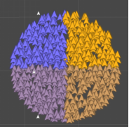

- Position、Rotation、Scale：类似发射器的Transform
- Align to Direction：让粒子朝向和发射方向对齐
- Randomize Direction：粒子发射方向随机权重
- Spherize Direction：将粒子方向朝球面方向混合
- Randomize position：随机发射位置，这个值是一个允许的距离偏移
四、Velocity over Lifetime（生命周期内的速度）
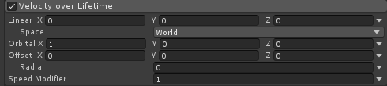
Linear：给粒子一个线性的速率向量
Space：速率向量作用的空间坐标系
Orbital（轨道）：可以使粒子绕着某个轴自行旋转
Offset（偏移）：在Orbital旋转的过程中在施加一个轴方向的速度
Radial（半径）：绕轴旋转形成的螺旋线半径
Speed Modifier：增加粒子整体运动速度
五、Limit Velocity over Lifetime（生命周期内限制速度）
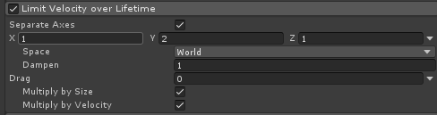
Speed（速度）：限制后的速度。时间轴是duration时间。
Dampen（抑制）：抑制的含义是在粒子生命期间的速度由初始速度改为当前设置的速度，值越小抑制的越晚。值越大抑制的越早。值0是整个粒子生命时间内没有抑制。1是整个时间内完全抑制。抑制速度不会大于初始速度
Drag：指定在粒子的整个生命周期内施加给粒子的反方向拉拽速度的数量
Multiply by Size：拉拽速度的大小根据粒子大小关联，粒子越大拉拽力越大
Multiply by velocity：拉拽速度的大小根据粒子速度关联，粒子速度越大拉拽力越大
Separate Axes：限制后的速度分别在xyz轴上定义
六、Inherit Velocity（继承速率）
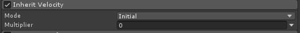
继承速度的含义是粒子继承了粒子系统这个物体位移速度。前提是粒子使用的空间坐标是world才行
- Mode（模式）：提供了两种initial（初始）current（当前的）
- Multiplier（乘值）：是速度要乘的数，速度是粒子系统在（世界）空间坐标中的速度，
- initial（初始）：计算粒子出生时的粒子系统速度。1就是原始速度，2，就是2倍速度。小数，速度会变慢。
- current（当前的）：计算的是实时的粒子系统速度。粒子系统愈快，粒子的运行速度就越快。但值为1的时候，粒子移动速度和粒子系统速度一致，所以视觉上看不出粒子的位移，大于1或小于1时才有意义
七、Force over Lifetime（生命周期内受到的力）
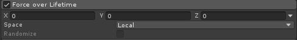
- X、Y、Z：在三个轴上施加的力
- Space：选择是在局部空间还是在世界空间中施力
- Randomize：使用 Two Constants 或 Two Curves 模式时，此属性会导致在每个帧上在定义的范围内选择新的作用力方向。因此会产生更动荡、更不稳定的运动
八、Color over Lifetime（生命周期内使用的颜色值）
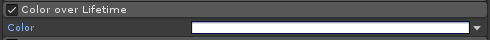
这个就是调整颜色的
九、Color by Speed（颜色受速度影响）
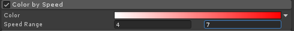
- Speed Range（速度范围）：设定受到颜色影响最小速度和最大速度
十、Size Over Lifetime（生命周期内的大小）
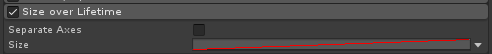
- Size：曲线指定粒子大小的变化
十一、Size by Speed（大小随速度变化）
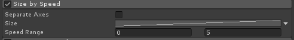
- Speed Range：指定曲线x轴的开始和结束速度
十二、Rotation over Lifetime（生命周期内的旋转）
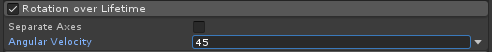
十三、Rotation by speed（旋转受到速度影响）
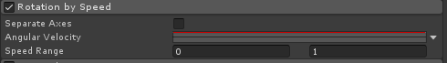
十四、External Forces（受外部力影响）
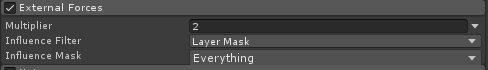
- Multiplier：受到的外力影响的倍率
十五、Noise（为粒子添加噪波影响）
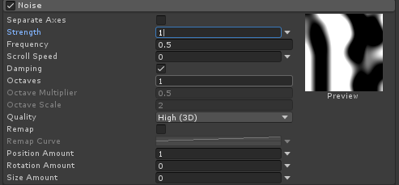
Strength：噪波影响强度
Frequency：影响频率
Scroll Speed：噪声图滚动的速度
Damping（减震）：当噪波强度和频率都很大时效果明显，可以将强度与频率匹配，从而达到一个较稳定的噪声表现
Octaves：噪波叠加的层数
Octaves multiplier（分层乘值）：就是和原始图的混合程度，0是没有混合，1是完全和原始图一致
Octaves scale（分层尺寸）：值1是和原始图一样大。值越越大细节越小
Quality（质量）：就是提供了1D的噪波、2D的噪波和3D选择的地方
Remap（重置图）：重新调节噪波图的黑白。类似于曲线的功能。可以从新定义粒子收到的影响
Position Amount：粒子受到的位移影响
rotation Amount：粒子受到的旋转影响
Size Amount：粒子受到的缩放影响
十六、collision（碰撞）
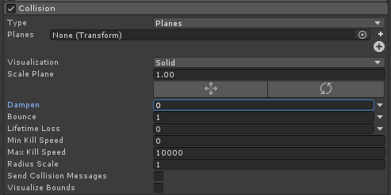
- Type（类型）：提供了两种plan和world类型。World主要针对场景中有collider组件的物体（包含terrain）会产生碰撞。Plan是指定一个的物体的transform，作为一个面产生碰撞
- Planes（面）：指定物体的transform为面。这个物体可以是场景中的也可以是资源中的。主要是用他的变换值。一版是和场景中的物体互动是有意义的，如果只是想得到一个碰撞可以使用空物体，会剩一点
- Visualization（形象）：有Grid（网格）和Solid（固体）两种。只是便于查看的显示方式
- Scale Plane（缩放片）:就是缩放Visualization这个片，还是为了便于观察
- Dampen（抑制力）：碰撞后，粒子的速度被抑制多少，1是抑制到速度为0，粒子会停留在片上，0是没有抑制
- Bounce（弹力）：碰撞后弹起的情况。1跟初始速度一样的速度反弹。0是不反弹，粒子会朝平面方向运动
- Lifetime Loss（生命损耗）：碰撞后，粒子生命所短的数量。1是缩短到最大。碰撞后粒子生命结束。0是没有损耗
- Min Kill Speed（速度小于值消灭粒子）：碰撞后的粒子速度小于这个值被摧毁
- Max Kill Speed（速度大于值消灭粒子）：碰撞后的粒子速度大于这个值被摧毁
- Radius Scale（半径的尺寸）：其实粒子的碰撞是和场景中其他碰撞是一个原理的，每个粒子都有一个圆的碰撞组件。计算碰撞就是计算这个组件和其他物体的碰撞的。这里调节半径尺寸是调的每个粒子碰撞大小
- Send Collision Messages（发送碰撞信息）：程序相关，程序会得到相关信息作出处理
- Visualize Bounds（显示界限）：就是显示出碰撞框
十七、Triggers（触发）
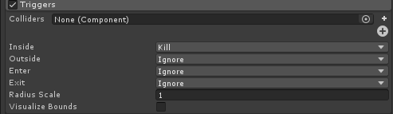
设置了Inside（内部）Outside（外部）Enter（进入）Exit（出去）四种状态的Ignore（忽略）、kill（消灭）、callback（回调）三种情况。回调的含义是给程序返回一个内容。 Colliders（碰撞的物体）：应该是个模型才有意义。真正起作用的是物体上面的collider组件。 Radius Scale（半径的尺寸）和Visualize Bounds（显示界限）碰撞功能一样
十八、Sub Emitters（子发射器）
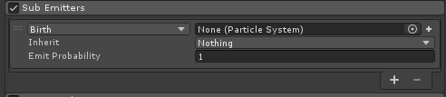
指定什么时候触发一个子粒子系统，这个子粒子系统会继承哪些属性，并且有多少概率触发
十九、Texture Sheet Animation（纹理片动画）
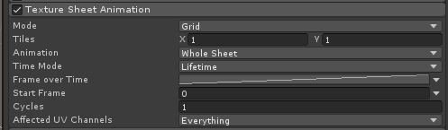
分为两种模式：Grid和Sprites
- Tiles（平铺数）：一张图标被切割的数量。x是横轴的数量，y是纵轴数量。
- Animation（动画）：有两种形式，
- Whole Sheet（全部小片）：从左至右、从上至下播放整个图片里的小方框。
- Single Row（单排）：只播一横排，因为可能会有很多排。当勾选了Random Row（随机行）时，随机选中一行播放。不够时，有一个Row值供手选使用哪一行。
- Frame over Time（时间内的帧数）：通常设置曲线是有意义的，设置数值只会显示固定的一帧（并非是帧，而是第几个小图）。注意的是小图片的第一张的序号是0。
- Start Frame（开始帧）：从第几帧开始播放，仍会完整读取序列。
- Cycles（循环）：正常图片的整个循环是在粒子的生命时间内循环一次。这里可以改变循环几次
二十、Light（光照）
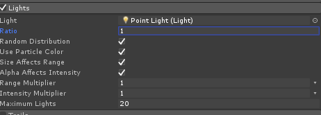
- Light（灯）：设置一盏灯，使粒子出生时同时有实时光照的效果，实质上就一个粒子一盏灯。 Ratio（比率）：产生的粒子会有多大比例有灯照，0是一个也没有，1是全部粒子都有。
- Random Distribution（随机分布）：当Ratio不是1时，设置产生灯照的粒子的分布情况，随机就是随机分布，勾掉则会根据粒子情况每隔多少秒出现一个灯照。
- Use Particle Color（使用粒子颜色）：灯照颜色使用粒子的颜色。
- Size Affect Range（尺寸作用与范围）：粒子的尺寸会影响灯照的范围。
- Alpha Affect Intensity（透明度作用于亮度）：粒子的透明度会影响灯照的亮度，调整粒子的生命颜色时就可以实现控制灯照的亮度了。
- Range multiplier（范围乘值）：增大灯照的范围。
- Intensity Multiplier（亮度乘值）：增大灯照的亮度。
- Maximum Lights（最大灯数）：因为是实时光照。灯的数量可能会根据粒子数量产生非常多，消耗会非常巨大。这里的值控制最多可以有多少个灯照被创建
二十一、Trails（拖尾）
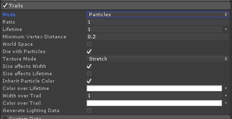
- Particle（粒子）：使用这个模式使粒子产生一个拖尾。
- Ratio（比例）：粒子会产生拖尾的比例。1是全部粒子都会有拖尾。
- Lifetime（生命）：拖尾的生命值。就是拖尾开始消失的时间。1是和粒子生命一样长。注意的是，默认Die with particle勾上时，粒子消失后拖尾也会消失，这个消失跟拖尾的Lifetime没有关系，只是被摧毁了。拖尾的生命时间就是开始消失的时间。
- Minimum Vertex Distance(最小顶点距离)：mesh的两个顶点的距离。也就是细节程度，值越小，效果越好。实质上是产生一次mesh的时间。当然时间越小整个生命里产生的网格越多了。早先版本trail的产生是按每多少帧产生mesh的数量算的，所以会造成一旦卡了，trail就完全没法看了，这里是按时间算的，不用担心掉帧了。
- World Space（世界空间）：勾上时，这个拖尾会受到空间位移的影响。不勾是，只会相对于自身粒子系统进行拖尾。
- Die with particle（跟随粒子消亡）：勾上时，粒子消失后，拖尾一起消失。
- Texture Mode(图片模式)：
- Stretch(拉伸):在整个mesh上拉伸整张图的U
- Tile（平铺）：U不会被拉伸，超出部分是重复平铺
- Distribute Per Segment（每段都分配）：和Stretch效果差不多，但计算的切入点不一样，Stretch是先计算出trail的长度，在拉伸图片。这个是先计算又多少个网格，每个网格上应该分配多少图片的信息。理论上应该更精细
- Repeat Per Segment（每段重复）：每一个网格上分配一个图片
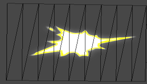
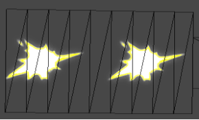
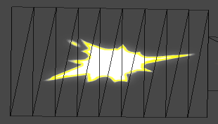
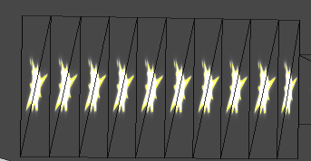
Size affects width（尺寸影响宽度）：勾上时，默认宽度和粒子大小一致。而且宽度也随粒子大小变化了。
Size affects lifetime（尺寸影响寿命）：勾上时，生命时间（也就是开始消失的时间）会受到尺寸的影响。 当粒子变的巨大和很小时，智能的缩减拖尾时间很有必要。
Inherit particle color（继承粒子颜色）：勾上时，拖尾颜色会受到粒子颜色的影响。
Color over lifetime（生命期内颜色）：拖尾生命时间内的颜色情况，是时间层面的，使用Gradient模式可以设置随时间变化颜色，开始是什么色，后面是什么色。跟粒子生命时间内颜色类似。
Color over trail（拖尾颜色的情况）：拖尾自身的颜色变化情况。是空间层面。使用Gradient模式可以设前段是什么色，后段是什么色。注意和Color over lifetime区别。
Width over trail（拖尾的宽度情况）：重要调节，来真正影响拖尾的宽度的值。曲线模式下可调节拖尾的前后宽度，横轴是整体长度，竖轴是宽度。
Generate Lighting Data（生成光照信息）：让trail可以收到光照
Ribbon（丝带）：让产生的粒子链接起来。目前来说功能很匮乏，效果很尴尬。
Ribbon count（丝带数量）：就是使用几条丝带来将所有粒子链接起来。1就是只有一条。当丝带数大于场景中的粒子数时，就不在会产生粒子。多说下粒子系的事情，每个粒子系统的粒子都是有序号的，假设一个序号为1的粒子2秒后消失，内存上说但他并不是真的消失了，它会从新回到发射器原点，模拟一个新的粒子出生，拥有新的生命和速度大小等。而这里的丝带链接目标是和序号有紧密关系的（坑深不挖）。所以当你看到条带数是粒子数的一半时，是两两链接的。
Split Sub Emitter Ribbons（分离子发射器的丝带）：就是如果当期粒子系统是一个子发射器。让每个粒子产生的新的发射器和其他产生的发射器不关联
二十二、Renderer（渲染器）
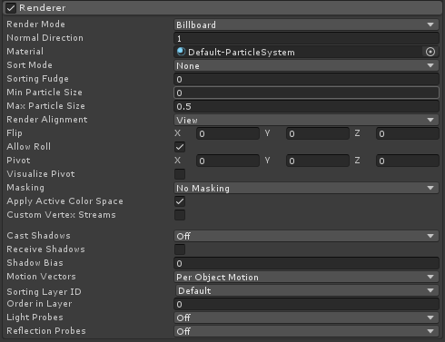
- Normal Direction（法线方向）：改变粒子片的法线方向。当粒子受到光照时（关键是shader要支持），将一个片模拟成一个受光照的体积
- Material（材质）：粒子的材质。图片通过shader生成一个材质。
- Trail Material（拖尾材质）：拖尾材质。
- Sort
Mode（排序模式）：给粒子排列先后顺序，它是针对粒子系统自身发出的粒子进行排序。而且粒子材质球是可排序的才有意义。就是材质要是透明材质才行。
- None（无）：不排序，混乱的。
- By Distance（依据距离）：根据粒子距离摄像机的远近排序。比较常用。
- Oldest in Front（最早在前）：谁先出生排列在前，后出生排列早后。平面上可能有用。
- Youngest in Front（最新的在前）：谁后出生排列在前、后出生排列在后。
- Sorting Fudge（排序欺骗）：作者的意思大概是说这是一个欺骗性的排序，它让粒子假装往前或者往后移动的多少距离。负值是原理镜头、正值是靠近镜头，靠近镜头的肯定会在前面。当然材质球也必须是可排序的材质球才行。例如相加、相乘、透明混合等。
- Min particle Size（最小粒子尺寸）：简单说小于这个值的粒子都会被放大到这个值这么大。这个值是屏幕大小，值1就是一个平面那么大。做屏幕特效时有用，不必去把粒子设的很大，用这个就能准确设定大小
- Max particle Size（最大粒子尺寸）：这个值同样只屏幕大小。当粒子显示大于这个值时，会被缩小。避免细小的粒子冲向摄像机时变的巨大。
- Render Alignment（显示队列）：指定粒子朝向方向，也就是z轴朝向。
- View（视野）：粒子片z轴朝向你观察的方向。
- World（时间）：粒子片z轴朝向世界的z轴。
- Local（自身）：粒子片z轴朝向粒子系统自身的z轴。这时就可以旋转它了，就是真实粒子片的状态。
- Facing（面朝）：粒子片z轴朝向摄像机位置。和view效果很像，但是却不并不一样。这里朝向时，会去掉透视关系，只是拿z这个面朝向你。Mesh状态下能看的更清楚。
- Velocity（速率）：粒子片z轴朝向自身运动的方向
- Pivot（中心点）：设置了三个方向可以调节中心点。在Stretched Billboard会有大用
- Visualize pivot（可视化中心点）：使粒子的中心点显示出来。粒子真正的运行位置，调节pivot时有用
- Masking（遮挡）：是关于sprite遮挡的功能。简而言之，sprite有个组件可以把图片做成一个遮照放到场景中。处理超出这个遮照范围外就会消失，或者只在范围外显示。通常用于平面类型特效上面
- No Masking（无遮挡）：不会有遮挡
- Visible Inside Mask（遮照内部可见）：只在Sprite Mask内部显示粒子。超出不显示
- Visible Outside Mask（遮照外部可见）：只在Sprite Mask外部显示粒子。内部不显示
- Custom Vertex Streams（自定义顶点流）：程序相关，脚本调用。主要处理顶点色。
- Cast Shadows（投射阴影）：可以投射阴影。但材质必须是不透明类型的。Off（关）On（开）Two Sided（双面）shadows Only（只有阴影。-）
- Receive Shadow（接收阴影）：公共版模式下意义不大因为是一个片接收到阴影并不舒服，建议mesh模型下使用。
- Motion Vectors（移动向量）：和摄像机的运动向量有关。不太明白意义是什么。可以确定的是和特效制作没关系了。
- Sorting Layer（排序层）：设置一个层处理前后关系，越早创建的层越靠后，越新创建的层越靠前。
- Order in Layer（层中排序）：在这里可以在同一个Sorting Layer层里设置前后关系。值越大越靠前。 要注意这两个功能和Sorting Fudge是有区别的。Sorting Fudge是假设他在场景中的位置，负值是离镜头较远、正值是离镜头较近。近的肯定是会覆盖掉远的，从而调节先后关系。而这里是真正更改渲染顺序的。在unity中整个排序是这样的，先计算shader上面的顺序，然后是Sorting layer的前后，然后是Order in layer大小，最后才是Sorting Fudge的影响。
- Light Probes（光照探针）：
- Reflection Probes（反射探针）： 这两项和其拓展出的功能都和灯光探测有关，坑深不挖。特效制作基本不用